186 configurations × five matched repeat seeds; motivate fixed-epoch and regularization hypotheses for later matched V2 tests
| rank | config_or_model | model | subject_BA_mean_sd_percent | subject_BA_repeat_t_CI95_percent | subject_macro_F1_mean_sd_percent | subject_macro_F1_repeat_t_CI95_percent | subject_macro_ROC_AUC | ROC_AUC_applicability | scientific_role |
|---|---|---|---|---|---|---|---|---|---|
| 1 | s1_085 | inception_time | 62.3 ± 7.0 | [53.6, 71.0] | 62.6 ± 7.7 | [53.0, 72.1] | N/A | continuous participant-level OOF probabilities not archived | historical_hypothesis_generation_only |
| 2 | s1_091 | inception_time | 62.1 ± 5.1 | [55.8, 68.5] | 62.2 ± 4.1 | [57.1, 67.3] | N/A | continuous participant-level OOF probabilities not archived | historical_hypothesis_generation_only |
| 3 | s1_105 | inception_time | 61.6 ± 3.8 | [56.9, 66.3] | 62.5 ± 3.9 | [57.7, 67.4] | N/A | continuous participant-level OOF probabilities not archived | historical_hypothesis_generation_only |
| 4 | s1_163 | inception_time | 61.2 ± 3.1 | [57.4, 65.0] | 61.7 ± 2.9 | [58.1, 65.3] | N/A | continuous participant-level OOF probabilities not archived | historical_hypothesis_generation_only |
| 5 | s1_079 | inception_time | 60.6 ± 4.0 | [55.6, 65.7] | 61.3 ± 3.7 | [56.7, 65.8] | N/A | continuous participant-level OOF probabilities not archived | historical_hypothesis_generation_only |
| 6 | s1_075 | inception_time | 60.5 ± 5.3 | [53.8, 67.1] | 61.2 ± 5.7 | [54.2, 68.3] | N/A | continuous participant-level OOF probabilities not archived | historical_hypothesis_generation_only |
| 7 | s1_077 | inception_time | 60.4 ± 6.1 | [52.8, 67.9] | 61.2 ± 6.7 | [52.8, 69.5] | N/A | continuous participant-level OOF probabilities not archived | historical_hypothesis_generation_only |
| 8 | s1_165 | inception_time | 60.4 ± 3.9 | [55.5, 65.3] | 60.0 ± 3.5 | [55.7, 64.4] | N/A | continuous participant-level OOF probabilities not archived | historical_hypothesis_generation_only |
| 9 | s1_099 | inception_time | 60.3 ± 8.4 | [49.8, 70.8] | 61.0 ± 8.7 | [50.2, 71.8] | N/A | continuous participant-level OOF probabilities not archived | historical_hypothesis_generation_only |
| 10 | s1_183 | inception_time | 60.3 ± 4.6 | [54.6, 66.0] | 59.9 ± 4.0 | [55.0, 64.8] | N/A | continuous participant-level OOF probabilities not archived | historical_hypothesis_generation_only |
| 11 | s1_181 | inception_time | 60.3 ± 6.2 | [52.6, 68.0] | 59.3 ± 7.4 | [50.1, 68.5] | N/A | continuous participant-level OOF probabilities not archived | historical_hypothesis_generation_only |
| 12 | s1_160 | inception_time | 60.1 ± 4.2 | [54.9, 65.3] | 60.7 ± 3.8 | [56.0, 65.4] | N/A | continuous participant-level OOF probabilities not archived | historical_hypothesis_generation_only |
| 13 | s1_178 | inception_time | 60.1 ± 4.1 | [55.0, 65.2] | 59.9 ± 5.3 | [53.3, 66.5] | N/A | continuous participant-level OOF probabilities not archived | historical_hypothesis_generation_only |
| 14 | s1_148 | inception_time | 60.1 ± 8.0 | [50.1, 70.0] | 58.6 ± 8.0 | [48.7, 68.6] | N/A | continuous participant-level OOF probabilities not archived | historical_hypothesis_generation_only |
| 15 | s1_158 | inception_time | 60.0 ± 7.0 | [51.3, 68.7] | 60.8 ± 6.9 | [52.2, 69.4] | N/A | continuous participant-level OOF probabilities not archived | historical_hypothesis_generation_only |
rank): Ordinal position after applying the table's declared sorting rule. Formula: N/A — identifier, provenance, configuration, status, or other non-arithmetic field.config_or_model): Direct identifier, provenance, configuration, grouping, or status value. Formula: N/A — identifier, provenance, configuration, status, or other non-arithmetic field.model): Direct identifier, provenance, configuration, grouping, or status value. Formula: N/A — identifier, provenance, configuration, status, or other non-arithmetic field.subject_BA_mean_sd_percent): Compact mean and sample-standard-deviation display for Macro-average recall across the K declared classes. Formula: display = 100 * mean +/- 100 * sqrt[sum_i (x_i - mean)^2 / (n - 1)]subject_BA_repeat_t_CI95_percent): Reported 95% confidence bound or interval for Macro-average recall across the K declared classes. Formula: repeat CI95 = 100 * (mean +/- t_(0.975,n-1) * sample_SD / sqrt(n))subject_macro_F1_mean_sd_percent): Compact mean and sample-standard-deviation display for Unweighted mean of the K class-specific F1 scores. Formula: display = 100 * mean +/- 100 * sqrt[sum_i (x_i - mean)^2 / (n - 1)]subject_macro_F1_repeat_t_CI95_percent): Reported 95% confidence bound or interval for Unweighted mean of the K class-specific F1 scores. Formula: repeat CI95 = 100 * (mean +/- t_(0.975,n-1) * sample_SD / sqrt(n))subject_macro_ROC_AUC): Area under the empirical receiver-operating-characteristic curve. Formula: ROC-AUC = integral_0^1 TPR(FPR) dFPR (empirical trapezoidal area)ROC_AUC_applicability): Direct method, applicability, reason, metric-roster, or cluster-unit provenance for the reported statistic. Formula: N/A — identifier, provenance, configuration, status, or other non-arithmetic field.scientific_role): Direct identifier, provenance, configuration, grouping, or status value. Formula: N/A — identifier, provenance, configuration, status, or other non-arithmetic field.| source_study | parameter_group | parameter | unique_value_count | observed_values | parameter_role | comparison_interpretation |
|---|---|---|---|---|---|---|
| 20260608_1206_overfitting_sweep_stage1_rank2 | architecture | model | 1 | ["inceptiontime"] | fixed | fixed_within_archive |
| 20260608_1206_overfitting_sweep_stage1_rank2 | architecture | resolved_model | 1 | ["inception_time"] | fixed | fixed_within_archive |
| 20260608_1206_overfitting_sweep_stage1_rank2 | input_and_windowing | extra_input | 1 | ["0"] | fixed | fixed_within_archive |
| 20260608_1206_overfitting_sweep_stage1_rank2 | input_and_windowing | window_sec | 1 | ["5"] | fixed | fixed_within_archive |
| 20260608_1206_overfitting_sweep_stage1_rank2 | input_and_windowing | hop_sec | 1 | ["2.5"] | fixed | fixed_within_archive |
| 20260608_1206_overfitting_sweep_stage1_rank2 | input_and_windowing | overlap_pct | 1 | ["50"] | fixed | fixed_within_archive |
| 20260608_1206_overfitting_sweep_stage1_rank2 | input_and_windowing | max_windows_fraction | 6 | ["0.2", "0.3", "0.5", "0.7", "0.9", "1"] | varied | marginal_descriptive_not_single_factor_causal |
| 20260608_1206_overfitting_sweep_stage1_rank2 | training_budget | cnn_epochs | 6 | ["10", "12", "15", "5", "50", "8"] | varied | marginal_descriptive_not_single_factor_causal |
| 20260608_1206_overfitting_sweep_stage1_rank2 | training_budget | cnn_patience | 1 | ["0"] | fixed | fixed_within_archive |
| 20260608_1206_overfitting_sweep_stage1_rank2 | training_budget | early_stopping_source | 1 | ["none_final_epoch_fixed"] | fixed | fixed_within_archive |
| 20260608_1206_overfitting_sweep_stage1_rank2 | optimization_and_regularization | cnn_lr | 2 | ["0.0005", "0.001"] | varied | marginal_descriptive_not_single_factor_causal |
| 20260608_1206_overfitting_sweep_stage1_rank2 | optimization_and_regularization | cnn_weight_decay | 10 | ["0", "0.0001", "0.0005", "0.001", "0.002", "0.005", "0.01", "0.02", "1e-05", "5e-05"] | varied | marginal_descriptive_not_single_factor_causal |
| 20260608_1206_overfitting_sweep_stage1_rank2 | optimization_and_regularization | cnn_dropout | 9 | ["-1", "0", "0.1", "0.2", "0.3", "0.4", "0.5", "0.6", "0.7"] | varied | marginal_descriptive_not_single_factor_causal |
| 20260608_1206_overfitting_sweep_stage1_rank2 | optimization_and_regularization | cnn_label_smoothing | 7 | ["0", "0.03", "0.05", "0.1", "0.15", "0.2", "0.3"] | varied | marginal_descriptive_not_single_factor_causal |
| 20260608_1206_overfitting_sweep_stage1_rank2 | optimization_and_regularization | regularization_bundle | 29 | ["WD=0.0001; dropout=-1; LS=0", "WD=0.0001; dropout=0.2; LS=0.1", "WD=0.0005; dropout=0.1; LS=0.1", "WD=0.0005; dropout=0.2; LS=0", "WD=0.0005; dropout=0.2; LS=0.03", "WD=0.0005; dropout=0.2; LS=0.05", "WD=0.0005; dropout=0.2; LS=0.1", "WD=0.0005; dropout=0.2; LS=0.15", "WD=0.0005; dropout=0.2; LS=0.2", "WD=0.0005; dropout=0.2; LS=0.3", "WD=0.0005; dropout=0.3; LS=0.1", "WD=0.0005; dropout=0.4; LS=0.1", "WD=0.0005; dropout=0.5; LS=0.1", "WD=0.0005; dropout=0.6; LS=0.1", "WD=0.0005; dropout=0.7; LS=0.1", "WD=0.0005; dropout=0; LS=0.1", "WD=0.001; dropout=0.2; LS=0.1", "WD=0.002; dropout=0.2; LS=0.1", "WD=0.002; dropout=0.4; LS=0.15", "WD=0.005; dropout=0.2; LS=0.1", "WD=0.005; dropout=0.4; LS=0.15", "WD=0.005; dropout=0.5; LS=0.2", "WD=0.01; dropout=0.2; LS=0.1", "WD=0.01; dropout=0.5; LS=0.2", "WD=0.01; dropout=0.6; LS=0.3", "WD=0.02; dropout=0.2; LS=0.1", "WD=0; dropout=0.2; LS=0.1", "WD=1e-05; dropout=0.2; LS=0.1", "WD=5e-05; dropout=0.2; LS=0.1"] | varied | marginal_descriptive_not_single_factor_causal |
| 20260608_1206_overfitting_sweep_stage1_rank2 | study_factor | overfit_stage | 2 | ["reference", "stage1"] | varied | marginal_descriptive_not_single_factor_causal |
| 20260608_1206_overfitting_sweep_stage1_rank2 | study_factor | stage1_screen_group | 2 | ["main_effect", "strong_combo"] | varied | marginal_descriptive_not_single_factor_causal |
| 20260608_1206_overfitting_sweep_stage1_rank2 | study_factor | stage1_regularization_factor | 6 | ["baseline", "combined_regularization", "dropout", "label_smoothing", "max_windows_fraction", "weight_decay"] | varied | marginal_descriptive_not_single_factor_causal |
| 20260608_1206_overfitting_sweep_stage1_rank2 | study_factor | stage1_regularization_value | 28 | ["0.0", "0.0001", "0.001", "0.002", "0.005", "0.01", "0.02", "0.03", "0.05", "0.1", "0.15", "0.2", "0.3", "0.4", "0.5", "0.6", "0.7", "1.0", "1e-05", "5e-05", "base", "wd0.002_do0.4_ls0.15_mw0.9", "wd0.005_do0.4_ls0.15_mw0.9", "wd0.005_do0.5_ls0.2_mw0.7", "wd0.005_do0.5_ls0.2_mw0.9", "wd0.01_do0.5_ls0.2_mw0.9", "wd0.01_do0.6_ls0.3_mw0.7", "wd0.01_do0.6_ls0.3_mw0.9"] | varied | marginal_descriptive_not_single_factor_causal |
| 20260608_1206_overfitting_sweep_stage1_rank2 | study_factor | is_reference | 2 | ["0", "1"] | varied | marginal_descriptive_not_single_factor_causal |
| 20260608_1206_overfitting_sweep_stage1_rank2 | data_roles | dynamic_data_mode | 1 | ["static_only"] | fixed | fixed_within_archive |
| 20260608_1206_overfitting_sweep_stage1_rank2 | data_roles | train_role_mode | 1 | ["static_only"] | fixed | fixed_within_archive |
| 20260608_1206_overfitting_sweep_stage1_rank2 | data_roles | validation_role_mode | 1 | ["static_only"] | fixed | fixed_within_archive |
| 20260608_1206_overfitting_sweep_stage1_rank2 | data_roles | test_role_mode | 1 | ["static_only"] | fixed | fixed_within_archive |
| 20260608_1206_overfitting_sweep_stage1_rank2 | data_roles | eval_protocol | 1 | ["stratified_group_kfold"] | fixed | fixed_within_archive |
| 20260608_1206_overfitting_sweep_stage1_rank2 | data_roles | n_splits | 1 | ["5"] | fixed | fixed_within_archive |
source_study): Direct identifier, provenance, configuration, grouping, or status value. Formula: N/A — identifier, provenance, configuration, status, or other non-arithmetic field.parameter_group): Direct identifier, provenance, configuration, grouping, or status value. Formula: N/A — identifier, provenance, configuration, status, or other non-arithmetic field.parameter): Direct identifier, provenance, configuration, grouping, or status value. Formula: N/A — identifier, provenance, configuration, status, or other non-arithmetic field.unique_value_count): Number of units satisfying the column's stated inclusion condition. Formula: count = sum_i 1[unit i satisfies the stated condition]observed_values): Persisted source-table value for `observed_values`; producer-specific semantics are not reinterpreted by the shared table renderer. Formula: N/A — direct persisted/source-defined value; the table renderer applies no additional arithmetic.parameter_role): Direct identifier, provenance, configuration, grouping, or status value. Formula: N/A — identifier, provenance, configuration, status, or other non-arithmetic field.comparison_interpretation): Direct identifier, provenance, configuration, grouping, or status value. Formula: N/A — identifier, provenance, configuration, status, or other non-arithmetic field.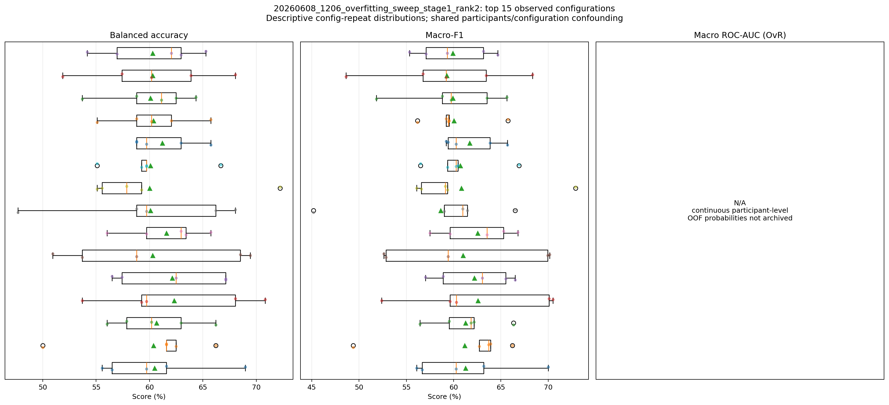
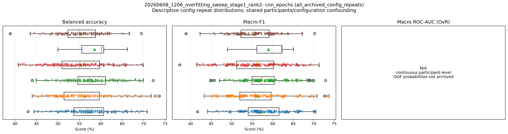
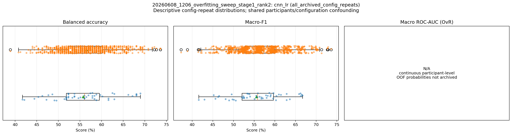
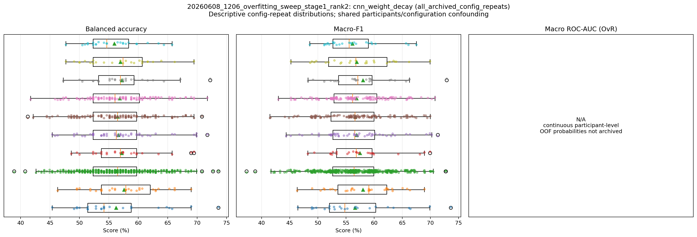
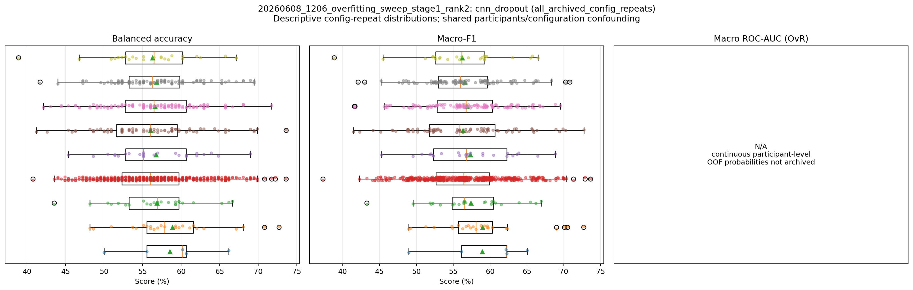
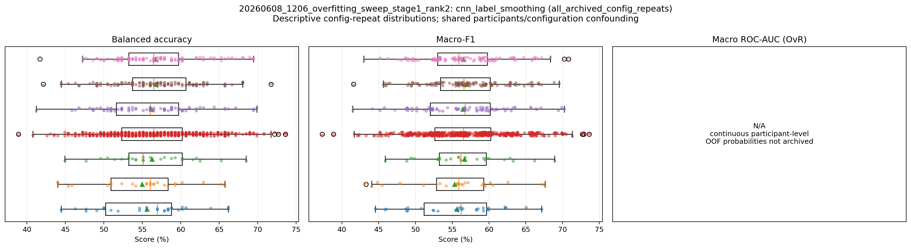
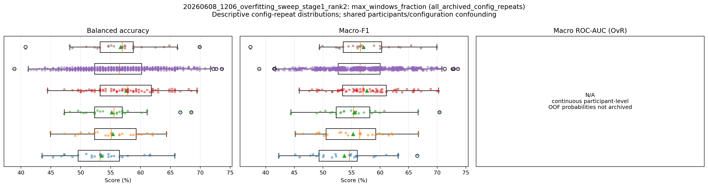
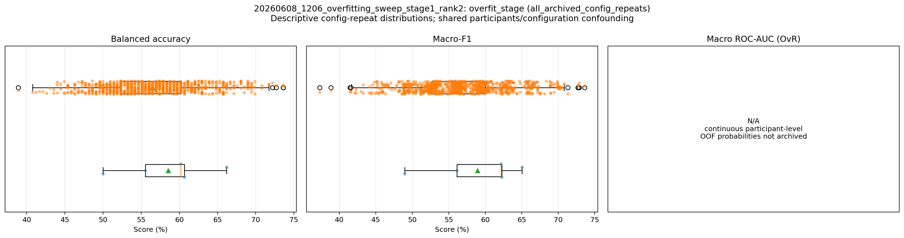
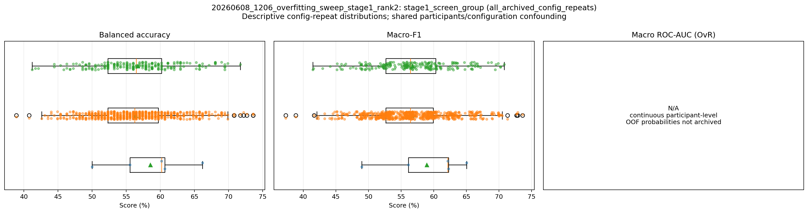
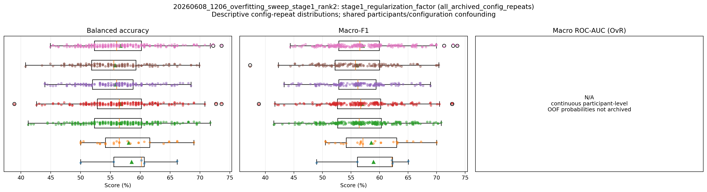
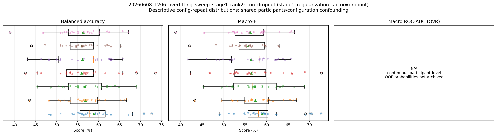
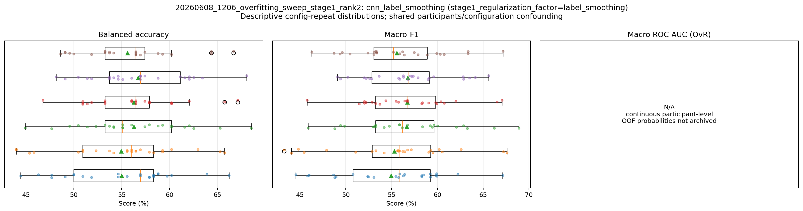
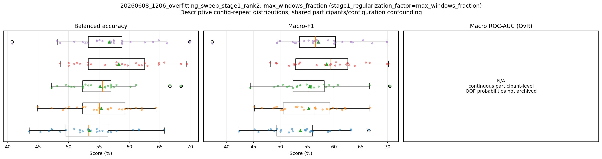
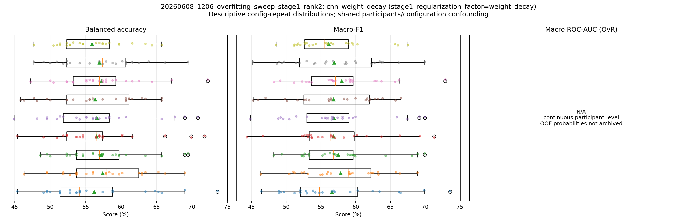